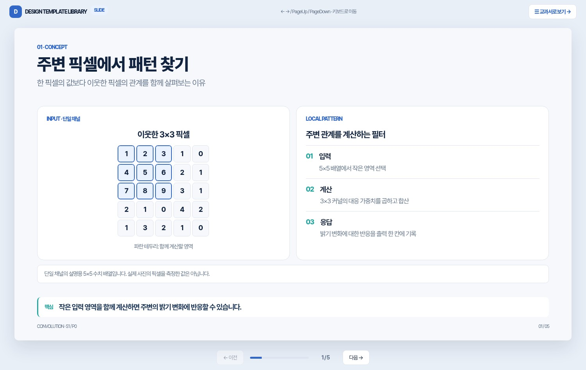

DESIGN TEMPLATE LIBRARY · EIGHT REFERENCE TYPES
기술 자료 디자인 레퍼런스
HTML Scroll·Slide 자료에 재사용할 8종의 시각 구성 패턴을 비교합니다. 최종 결과물은 브라우저 기반 자료입니다.

01 · HTML 패턴
Concept
개념 설명 + 수치·도식 예제

02 · HTML 패턴
Process
입력 → 처리 → 출력 구조

03 · HTML 패턴
Comparison
동일 기준의 방법 비교

04 · HTML 패턴
Step-by-step
수식 및 연산의 단계별 풀이

05 · HTML 패턴
Interactive
조작과 계산 결과를 실시간 연결

06 · HTML 패턴
Architecture
모델 구조와 Tensor Shape

07 · HTML 패턴
Experiment
혼동행렬과 평가 지표 비교

08 · HTML 패턴
Executive Summary
주요 지표·비교·조치 사항

CONNECTED EXAMPLE COURSE
연속 강의 예제 · CNN
8종의 독립적인 레퍼런스와 별도로, 5개 개념을 웹 교과서(Scroll)와 발표 자료(Slide) 두 방식으로 보여줍니다.
웹 교과서 보기 ↗슬라이드 보기 ↗8종 레퍼런스는 HTML Scroll·Slide 제작을 위한 디자인 패턴입니다. PPTX 제작·변환·동기화는 지원하지 않습니다.